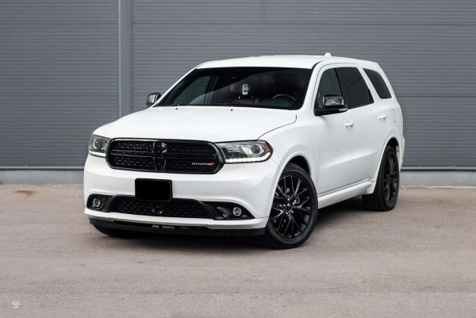

Welcome to benzinas
benzinas skelbimai - Skelbiu.lt
2020.10.29 11:20X Dėl geresnės Skelbiu.lt paslaugų kokybės naudojame slapukus (angl. cookies).
Naršydami toliau, patvirtinate, kad sutinkate su slapukais. Tai bet kada galėsite atšaukti, pakeisdami nustatymus. Skelbiu.lt slapukų politika . Lankomiausias
skelbimų portalas LT RU ( 0 ) Įsiminti skelbimai ( 0 ) Peržiūrėti skelbimai Paieškos ( 0 ) Prisijungti Registruotis benzinas, Visi skelbimai (49074) Gauti naujus skelbimus: Ekrane El. paštu + Įdėti skelbimą Įsiminti skelbimai (0) Skelbimų: 49074 Tinkamiausi viršuje Tinkamiausi viršuje Naujausi viršuje Atnaujinti viršuje
NEPRALEISKITE NAUJŲ SKELBIMŲ
benzinas, Visi skelbimai
Gaukite naujus skelbimus į ekraną Gaukite naujusskelbimus el. paštu Kaunas, ... prieš 1 d. 9
Sandėlio Išpardavimas ! Kiekis Ribotas !
SANDĖLIO IŠPARDAVIMAS ! LIKĘS KIEKIS YRA LABAI RIBOTAS ! PATIKINAME, KAD TOKIA KAINA BUS TIK IKI 2020-12-31 ! Į komplektą įeina: Ratai, arimo plūgas, vagojimo plūgas, freza ! Kodėl būtent patariame rinktis šiuos motoblokus-kultivatorius... Būklė: nauja 449 € Šiauliai, ... prieš 1 d. 9Išpardavimas - Agrotech rinkis geriausia!
IKI NAUJŲJŲ METŲ MOTOBLOKĄ NUSIPIRK GERIAUSIA KAINA! TOKIŲ KAINŲ NEBEBUS ! Tik mūsų įmonė prekiauja AGROTECH motoblokais visoje Lietuvoje! Šie motoblokai išsiskiria savo kainos ir kokybės santykiu! Už itin patrauklią kainą gausite... Būklė: nauja 239 € Vilnius prieš 1 val. 5Autodiagnostika ir remontas, bet ir Co patikra
Visų tipų kurų variklių(benzino, dizelino, dujų.), diagnostika ir REMONTAS. Mes dirbame, jau 25 metus, JUMS ! CRD purkštukų REMONTAS ir keitimas(dizeliai). ***Suodžių filtrų (DPF) priverstinė regeneracija, plovimas ir keitimas. ***Paruošimas... Vilnius, ... prieš 1 d. 5Automobilių nuoma Vilnius Kaunas Ryga Talinas 10€
Vilniuje auto nuoma oro uoste pristatymas nemokamas www.autotriumph.lt Automobilių nuoma Kaune Trakuose Utenoje Palangoje Šiauliuose Molėtuose ! Nuoma verslui sukurta kainos kokybės santykis ! Rytojaus ateitis šiandien Asmeninė ilgalaikė... Vilnius prieš 1 d. 3Pigi Automobiliu Nuoma Vilniuje - Dezinfekuoti
Trumpalaikei, ilgalaikei nuomai, nuomojame lengvuosius automobilius Vilniuje. Siūlome tvarkingus, praktiškus, patikimus bei nebrangius modelius. Nuomai siūlome: TOYOTA YARIS - benzinas, mechaninė, 5 vietų CITROEN C4 - dyzelis,... Vilnius, ... prieš 1 d. 2Motoblokai - Kultivatoriai - Vilnius, Jankausko g.
Pristatymas nemokamas! Geriausia kaina garantuojame! 1. Motoblokas / Kultivatorius GTM 750D : Kaina - 499eur Variklis : 4-taktis / 7,5AG / 5,5KW / Benzinas Darbinis plotis : 50-85cm Darbinis gylis : 15cm - 30cm Greičių dėžė : 2 bėgiai pirmyn /... Būklė: nauja 499 € Klaipėda, ... prieš 1 d. 2Motoblokai - Kultivatoriai ! Klaipėdoje !
Pristatymas į visus miestus! Geriausia kokybė tik GTM motoblokų! Garantuojame. 1. Motoblokas / Kultivatorius GTM 750C : Kaina - 499eur AKCIJA 449eur Variklis : 4-taktis / 7,5AG / 5,5KW / Benzinas Darbinis plotis : 50-85cm Darbinis gylis : 15cm ... Būklė: nauja Kaunas, ... prieš 2 val. 2Generatoriai Boxer 1250 w, 3000 w, 3500 w Nauji
Maloniai kviečiame apsilankyti mūsų naujoje internetinėje svetainėje www.prekes-visiems.lt I-VII: 8-21 Senosios obels g. 1, Kaunas! Prieš atvykdami būtinai pasiskambinkit. Kad mūsų kaina būtų... Būklė: nauja 55 € Klaipėda, ... prieš 1 d. 2Galinga Aukšto slėgio Plovykla
Mūsų mobilus, ITIN galingas benzininis aukšto slėgio valymo įrenginys Wilks Genuine USA TX625 be vandens pašildymo pasižymi inovatyviomis savybėmis - su juo saugu ir patogu dirbti. Unikalus ir lengvai prižiūrimas turi 5 skirtingų valymo... Būklė: nauja 35 € Kaunas, ... prieš 1 d. 2Galingas motoblokas! 3 bėgiai pirmyn ! Negreitas !
Šiuo metu populiariausias motoblokas ! Galingas variklis, atnaujintas modelis ir nesudėtingas valdymas ! 3 bėgiai pirmyn ! Labai patogus ir NEGREITAS motoblokas - kultivatorius ! AKCIJA! Dabar jau komplekte - ratai, freza, plūgas ir vagotuvas !... Būklė: nauja 649 € Reklama Kaunas, ... prieš 4 val. 2Opel Astra Gtc 2013m. 1.6 turbo 137kw
Parduodamas asmeninis Opel Astra GTC 1.6 Turbo 2013m. Daug privalumu kaip lietaus davikliai, atstumo jutikliai ir Webasto su pulteliu (nuotolinis automobilio pasildymas, labai patogu saltu metu laiku) ir šildomos sėdynės. Du raktai, tech.... 2013 m. | 1.6 | Benzinas | Mechaninė | 187 km 4 450 € Vilnius prieš 31 min. 1Grunto tankintuvas / vibro plokštė Baumax 100 kg
Grunto tankintuvas Baumax VP16 / 44 Svoris: apie 104 kg Tankinimo jėga: 20 kN (apie 2050 kg) Tankinimo gylis maks.: 30 cm (priklausomai nuo grunto) Galia: 4,8 kW (6,5 AG) Variklis: Vieno cilindro 4 taktų, benzinas, aušinamas oru,... Būklė: nauja 440 € Vilnius prieš 1 d. 1Baumax vibro plokstes geriausiom kainom
Parduodame naujas kokybiskas vibroplokstes BAUMAX. Ivairiu svoriu 60-390kg Garantija suteikiama 1m,taip pat siulome po garantini aptarnavima. Sandelyje visada turime atsarginiu daliu. Pristatymas visoje Lietuvoje. Trinkeliu pjovimo stakles 2,2kw... Būklė: nauja 420 € Kelmės r. prieš 47 min. 1Sodo traktoriukas Stiga Park 320 .Akcija.
Super akcija rezervuok dabar už 3499eur! ir pristatysime Jums nuo 2020.12.01 iki 2021.03.01. Sumokamas vietoje - pervedamas išrašyta išankstine sąskaita avansas TIK 200Eur (Standartinė traktoriuko kaina 4499eur) Prekių kiekis labai ribotas! ... Būklė: nauja 3 499 € Kaunas, ... prieš 1 d. 1Puikus pasiūlymas! 3 bėgiai pirmyn !
AKCIJA! Dabar jau komplekte - guminiai ratai, freza, plūgas ir vagotuvas ! AKCIJA! NEMOKAMAS PRISTATYMAS! Pristatome į visus miestus! Išrašome PVM sąskaitas faktūras! Parduodame lizingu! Jei rasite pigiau patikiname, kad pasiūlysime jums dar... Būklė: nauja 549 € Klaipėda, ... prieš 1 d. 1Elektros generatorius 5.5 kw su el. starteriu!
Vežame į visus miestus! Išrašome PVM sąskaitas faktūras. Parduodame lizingu. Benzininis generatorius ASTOR BS6500 Aprašymas: Techniniai parametrai: Didžiausia galia - 5,5 kW Nominali galia - 5 kW Įtampa - 230 V Kuras - benzinas 95 Išėjimai -... Būklė: nauja 439 € Vilnius spalio 19 d. 1El. stotelės(generatoriai)"herkmann"100% varinės
visas prekes galite užsakyti telefonu nr.868580912 arba prekes pirkti per mūsų elektroninę parduotuvę. Mūsų internetinis puslapis:herkmann.lt HERKMANN HV-950(nominalas 900 W) benzininis generatorius,išejimas-220 V ir 12V ,variklio tipas 2,0 HP... Būklė: nauja 105 € Panevėžys prieš 4 val.Aeratorius benzinas
Mažai naudoti,tvarkingi.Juodas 270€ be surinkimo krepšio. sidabrinis 290€. Tel.865657408 Būklė: naudota 270 € Klaipėda, ... spalio 23 d.Dyzelinis kuras, namams, darbui, žemės ūkiui.
Prekiaujame visomis kuro rūšimis: Benzinas Dyzelinas Dyzelinas krosnių kurui Dyzelinas žemės ūkiui Dyzelinas laivams, bunkeriavimas Pristatome visoje Vakarų Lietuvoje, patariame, planuojame, draugaujame. Esame greiti ir patikimi! ... Kaunas spalio 17 d.Benzinas
Variklis daug vazuokles daliu 2002m variklio pilnas variklis su greicu deze tinka peugeot masinai 2002 | Naudota 100 € Panevėžys prieš 4 val.Malku zeimeris benzinas 700mm
Naujas iš Vokietijos Scheppach HS720B.Variklis Loncin keturtaktis 12,2PS.Max malkos diametras 250 mm. Kaina 510 € Tel. 865657408 Turiu nedaug naudotą 410 € Naujo nebeturiu Būklė: nauja 410 € Panevėžys prieš 4 val.Šluota benzinas ,gude 900mm
Kombi aparatas su šluota ir surinkimo bunkeriu.Plotis 900 mm.Variklis benzinas 6,5 PS.Sukimas per kardaną.Kaina 860€ Turiu ir naudotą 520€ Tel. 865657408 Būklė: nauja 520 € Šiauliai prieš 1 d.Mazda Mpw 2l. benzinas /dujos
2.0 benzinas/dujos,2001.11 ,7 vietos. T/A iki 2022.07. Ekonomiškas šeimyninis automobilis,kondicionierius veikia,atskirai veikiantis galinis šildymas.Tikra rida,yra patvirtinantys dokumentai.2 komplektai lietų ratų žiemai/vasarai,du rakteliai su... 2001 m. | 2.0 | Benzinas + dujos | Mechaninė | 140000 km 1 650 € Vilnius spalio 10 d.Peugeot 407 automatas benzinas 2lta2022 tvarkingas
Parduodamas tvarkingas automobilis Peugeot 407 automatas, benzinas variklis 2L 2004/11/03 tik ką praeita tech apžiūra tikra nedidelė rida 122857km. Elektro paketas, užsilenkiantys veidrodėliai, klimatas, kėbulas tvarkingas, salonas idealus,... 2004 m. | 2.0 | Benzinas | Automatinė | 122857 km 2 950 € E. parduotuvės prekė Makita ER2600L varle.lt, pigu.lt, bausa.lt nuo 179.99 € E. parduotuvės prekė Bakelis kurui (benzinui, dyzelinui) 5l, Hitachi rankis.lt 6.99 € Daugiau prekių Kainos.lt » 1 2 3 4 5 6 Įsiminti skelbimai Įdėkite skelbimąPopuliarios paieškos:
benzinas elektra
benzinas vilnius
benzinas dujos
benzinas mechanine
benzinas marijampole
benzinas jurbarko r
benzinas kaunas
benzinas dujos klaipeda
benzinas utenos r
benzinas vilkaviskio r
Prisijunk ir rask savo įsimintus skelbimus visur – kompiuteryje, telefone, planšetėje ARBA Jungtis su Facebook Jungtis su Google Skelbiu.lt pagalba: +370 664 55727 Darbo laikas: I-V 08:20 - 17:00 Naudojimo taisyklės / D.U.K. Kontaktai Svetainės struktūra D I G I N E T